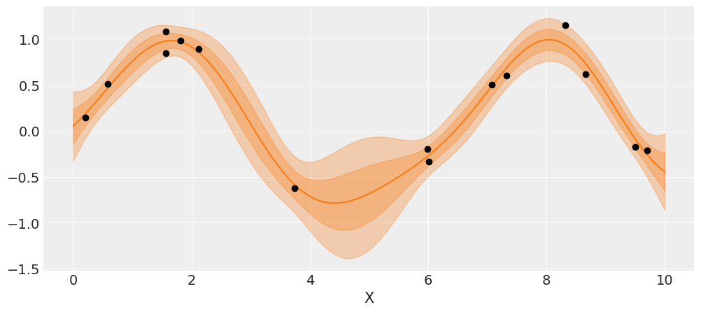

Chapter 7. Gaussian Processes¶
import os
import warnings
import arviz as az
import matplotlib.pyplot as plt
import pandas as pd
import seaborn as sns
import jax.numpy as jnp
from jax import random, vmap, local_device_count, pmap, lax, tree_map
from jax import nn as jnn
from jax.scipy import stats, special
import numpyro
import numpyro.distributions as dist
import numpyro.optim as optim
from numpyro.infer import MCMC, NUTS, HMC, Predictive
from numpyro.diagnostics import hpdi, print_summary
from numpyro.infer import Predictive, SVI, Trace_ELBO, init_to_value
from numpyro.infer.autoguide import AutoLaplaceApproximation
seed=1234
if "SVG" in os.environ:
%config InlineBackend.figure_formats = ["svg"]
warnings.formatwarning = lambda message, category, *args, **kwargs: "{}: {}\n".format(
category.__name__, message
)
az.style.use("arviz-darkgrid")
numpyro.set_platform("cpu") # or "gpu", "tpu" depending on system
numpyro.set_host_device_count(local_device_count())
# import pymc3 as pm
# import numpy as np
# import pandas as pd
# from scipy import stats
# from scipy.special import expit as logistic
# import matplotlib.pyplot as plt
# import arviz as az
# az.style.use('arviz-darkgrid')
Modeling functions¶
x = jnp.linspace(0, 1, 10)
y = dist.Normal(0, 1).sample(random.PRNGKey(0), (len(x),))
# y = np.random.normal(0, 1, len(x))
plt.plot(x, y, 'o-', label='the first one')
y = jnp.zeros_like(x)
for i in range(len(x)):
# x[idx] = y``, use ``x = x.at[idx].set(y)
y = y.at[i].set(dist.Normal(y[i-1], 1).sample(random.PRNGKey(i*i)))
# y[i] = dist.Normal(y[i-1], 1)
plt.plot(x, y, 'o-', label='the second one')
plt.legend()
<matplotlib.legend.Legend at 0x7fac6159f460>
Covariance functions and kernels¶
def exp_quad_kernel(x, knots, ℓ=1):
"""exponentiated quadratic kernel"""
return jnp.array([jnp.exp(-(x-k)**2 / (2*ℓ**2)) for k in knots])
# def linear_kernel(x, knots):
# """ linear kernel """
# return np.array([(x - 2) * (k - 2) for k in knots])
data = jnp.array([-1, 0, 1, 2]) # np.random.normal(size=4)
cov = exp_quad_kernel(data, data, 1)
_, ax = plt.subplots(1, 2, figsize=(12, 5))
ax = list(ax.flat)
ax[0].plot(data, jnp.zeros_like(data), 'ko')
ax[0].set_yticks([])
for idx, i in enumerate(data):
ax[0].text(i, 0+0.005, idx)
ax[0].set_xticks(data)
ax[0].set_xticklabels(jnp.round(data, 2))
#ax[0].set_xticklabels(np.round(data, 2), rotation=70)
ax[1].grid(False)
im = ax[1].imshow(cov)
colors = ['w', 'k']
for i in range(len(cov)):
for j in range(len(cov)):
ax[1].text(j, i, round(cov[i, j], 2),
color=colors[int(im.norm(cov[i, j]) > 0.5)],
ha='center', va='center', fontdict={'size': 16})
ax[1].set_xticks(range(len(data)))
ax[1].set_yticks(range(len(data)))
ax[1].xaxis.tick_top()
cov
DeviceArray([[1. , 0.99998736, 0.9999495 , ..., 0.6126262 ,
0.6095785 , 0.60653067],
[0.99998736, 1. , 0.99998736, ..., 0.6156736 ,
0.6126262 , 0.6095785 ],
[0.9999495 , 0.99998736, 1. , ..., 0.6187206 ,
0.61567366, 0.61262625],
...,
[0.6126262 , 0.6156736 , 0.6187206 , ..., 1. ,
0.99998736, 0.9999495 ],
[0.6095785 , 0.6126262 , 0.61567366, ..., 0.99998736,
1. , 0.99998736],
[0.60653067, 0.6095785 , 0.61262625, ..., 0.9999495 ,
0.99998736, 1. ]], dtype=float32)
import numpy as onp
onp.linalg.cholesky(cov)
---------------------------------------------------------------------------
LinAlgError Traceback (most recent call last)
/var/folders/9y/6kx7fns90pn84gtycx7dyl680000gn/T/ipykernel_69498/231636669.py in <module>
1 import numpy as onp
----> 2 onp.linalg.cholesky(cov)
<__array_function__ internals> in cholesky(*args, **kwargs)
/usr/local/anaconda3/envs/bap-numpyro/lib/python3.8/site-packages/numpy/linalg/linalg.py in cholesky(a)
762 t, result_t = _commonType(a)
763 signature = 'D->D' if isComplexType(t) else 'd->d'
--> 764 r = gufunc(a, signature=signature, extobj=extobj)
765 return wrap(r.astype(result_t, copy=False))
766
/usr/local/anaconda3/envs/bap-numpyro/lib/python3.8/site-packages/numpy/linalg/linalg.py in _raise_linalgerror_nonposdef(err, flag)
89
90 def _raise_linalgerror_nonposdef(err, flag):
---> 91 raise LinAlgError("Matrix is not positive definite")
92
93 def _raise_linalgerror_eigenvalues_nonconvergence(err, flag):
LinAlgError: Matrix is not positive definite
scipy.stats.multivariate_normal.rvs(cov=cov, size=2).T
RuntimeWarning: covariance is not positive-semidefinite.
array([[1.22834997, 1.26860861],
[1.22305191, 1.2751146 ],
[1.21725241, 1.28201152],
[1.21087143, 1.28862307],
[1.20532334, 1.29586049],
[1.19978672, 1.30182685],
[1.19356774, 1.30673356],
[1.18807364, 1.31364538],
[1.18212254, 1.32064075],
[1.17558817, 1.32581598],
[1.16981591, 1.3327004 ],
[1.16421756, 1.33831306],
[1.15860885, 1.34451221],
[1.15313842, 1.34923182],
[1.14646254, 1.355225 ],
[1.14124387, 1.36029765],
[1.13549547, 1.36516422],
[1.12895057, 1.3713957 ],
[1.12422938, 1.37655859],
[1.11764509, 1.38207624],
[1.11204476, 1.38639213],
[1.10619711, 1.39099539],
[1.10072925, 1.39708865],
[1.0950571 , 1.40125147],
[1.09013638, 1.40544347],
[1.08381375, 1.4103632 ],
[1.07895087, 1.41464009],
[1.07328475, 1.4184839 ],
[1.06750644, 1.42329084],
[1.06183023, 1.42742417],
[1.05645092, 1.43089956],
[1.05126399, 1.43428785],
[1.04542456, 1.43898383],
[1.03978415, 1.44227499],
[1.03456501, 1.44626591],
[1.02953554, 1.44804436],
[1.02360813, 1.45142245],
[1.01920607, 1.45513867],
[1.01357327, 1.45950914],
[1.00798219, 1.46200108],
[1.00284421, 1.46440118],
[0.99651242, 1.46800336],
[0.99099775, 1.47005644],
[0.98627839, 1.47276092],
[0.98221156, 1.47506495],
[0.97691585, 1.47802344],
[0.97247569, 1.48019942],
[0.9661773 , 1.48111496],
[0.96126503, 1.48390362],
[0.95606151, 1.48574872],
[0.95172718, 1.4883004 ],
[0.94610328, 1.48874033],
[0.94158849, 1.49187074],
[0.93730434, 1.49234079],
[0.93092552, 1.49377998],
[0.92741322, 1.49487654],
[0.92216119, 1.49596871],
[0.91849701, 1.49708688],
[0.91310846, 1.49883881],
[0.90863707, 1.49967159],
[0.90398875, 1.49973405],
[0.89940298, 1.50073857],
[0.89484153, 1.50131931],
[0.89034191, 1.50122569],
[0.88606359, 1.50265256],
[0.88157595, 1.50225347],
[0.87653267, 1.50285578],
[0.87258591, 1.50291047],
[0.86782887, 1.50250208],
[0.86452653, 1.50279476],
[0.86065832, 1.50239505],
[0.85564012, 1.50151861],
[0.85210079, 1.50201755],
[0.8481202 , 1.50108929],
[0.84366669, 1.5002522 ],
[0.83962756, 1.49808148],
[0.8356202 , 1.49849782],
[0.83197736, 1.49880421],
[0.82797261, 1.49686268],
[0.82347324, 1.49549258],
[0.8204014 , 1.4942432 ],
[0.81720691, 1.49270749],
[0.8130361 , 1.49200511],
[0.80912126, 1.49004347],
[0.80549373, 1.48851091],
[0.80225647, 1.48658018],
[0.79809758, 1.48493699],
[0.79511329, 1.4817913 ],
[0.79192946, 1.48038088],
[0.7891514 , 1.47810695],
[0.7854522 , 1.47645541],
[0.78212484, 1.47345521],
[0.77865185, 1.47120853],
[0.77571075, 1.46861671],
[0.77150938, 1.46693716],
[0.7695443 , 1.46372656],
[0.76581067, 1.46127417],
[0.7637027 , 1.45819984],
[0.76024889, 1.45498951],
[0.75696391, 1.45247269],
[0.7546983 , 1.45085776],
[0.7517832 , 1.44627637],
[0.74901317, 1.44389102],
[0.74644898, 1.43970353],
[0.74398602, 1.43642019],
[0.74105686, 1.43273793],
[0.73920703, 1.42944461],
[0.73657213, 1.42556891],
[0.73358376, 1.42228537],
[0.73108861, 1.41828222],
[0.72876998, 1.41394623],
[0.72596376, 1.40999813],
[0.72300718, 1.40632597],
[0.72251101, 1.40201102],
[0.71857912, 1.39822693],
[0.71784158, 1.39355986],
[0.71530644, 1.38924087],
[0.71339197, 1.38507457],
[0.71041813, 1.38049428],
[0.70887513, 1.37690037],
[0.70689073, 1.37126061],
[0.70548095, 1.36748257],
[0.70313452, 1.36287306],
[0.70137117, 1.35748969],
[0.69989588, 1.35292971],
[0.69938697, 1.34837913],
[0.69676902, 1.34261635],
[0.69468667, 1.33793432],
[0.69259705, 1.33352073],
[0.69194959, 1.3278962 ],
[0.6903998 , 1.32271078],
[0.68877001, 1.31702569],
[0.6871487 , 1.31253962],
[0.68630734, 1.30723765],
[0.68402401, 1.30190062],
[0.68343193, 1.29688219],
[0.68257924, 1.29108299],
[0.68067166, 1.28559347],
[0.67953412, 1.27911588],
[0.67983449, 1.27432699],
[0.67758668, 1.26895524],
[0.67628052, 1.26263415],
[0.67525752, 1.25754894],
[0.67407117, 1.25119887],
[0.67317311, 1.24573331],
[0.67200599, 1.23941705],
[0.67195932, 1.23436487],
[0.67071368, 1.22802535],
[0.66989234, 1.22134134],
[0.67050067, 1.21576575],
[0.66888637, 1.20948851],
[0.66870897, 1.20360157],
[0.66679842, 1.19817939],
[0.66666204, 1.19185133],
[0.66639067, 1.18604894],
[0.6652358 , 1.17979469],
[0.66495332, 1.17354564],
[0.6642215 , 1.16695682],
[0.66393073, 1.16135227],
[0.66378381, 1.15480639],
[0.6629655 , 1.14799279],
[0.66309825, 1.14197151],
[0.66175358, 1.13561118],
[0.66227839, 1.12984325],
[0.66170638, 1.12354541],
[0.66109193, 1.11635925],
[0.66162106, 1.11025977],
[0.6608557 , 1.10447617],
[0.66106632, 1.09680616],
[0.66101192, 1.09108545],
[0.66084843, 1.08395282],
[0.66052339, 1.0783072 ],
[0.66045684, 1.07232264],
[0.66042845, 1.06546908],
[0.66104575, 1.0590404 ],
[0.66038399, 1.05307127],
[0.66134973, 1.04614853],
[0.66002179, 1.04034875],
[0.66079018, 1.03380879],
[0.66114864, 1.0270071 ],
[0.66114755, 1.02073483],
[0.6603978 , 1.01477346],
[0.66063908, 1.00847714],
[0.66144295, 1.00211527],
[0.6616524 , 0.99586983],
[0.66124895, 0.9887918 ],
[0.66215697, 0.9833618 ],
[0.66251425, 0.97621597],
[0.66142867, 0.96940604],
[0.66257405, 0.9638015 ],
[0.66264867, 0.95793698],
[0.66424105, 0.95048408],
[0.6633457 , 0.9445846 ],
[0.6636494 , 0.93852713],
[0.66376808, 0.93158544],
[0.66425539, 0.92544706],
[0.66517844, 0.91938353],
[0.66529752, 0.91325503],
[0.66454473, 0.90701574],
[0.66593941, 0.90155903]])
dist.MultivariateNormal(covariance_matrix=cov).sample(random.PRNGKey(0), (2,))
DeviceArray([[nan, nan, nan, nan, nan, nan, nan, nan, nan, nan, nan, nan,
nan, nan, nan, nan, nan, nan, nan, nan, nan, nan, nan, nan,
nan, nan, nan, nan, nan, nan, nan, nan, nan, nan, nan, nan,
nan, nan, nan, nan, nan, nan, nan, nan, nan, nan, nan, nan,
nan, nan, nan, nan, nan, nan, nan, nan, nan, nan, nan, nan,
nan, nan, nan, nan, nan, nan, nan, nan, nan, nan, nan, nan,
nan, nan, nan, nan, nan, nan, nan, nan, nan, nan, nan, nan,
nan, nan, nan, nan, nan, nan, nan, nan, nan, nan, nan, nan,
nan, nan, nan, nan, nan, nan, nan, nan, nan, nan, nan, nan,
nan, nan, nan, nan, nan, nan, nan, nan, nan, nan, nan, nan,
nan, nan, nan, nan, nan, nan, nan, nan, nan, nan, nan, nan,
nan, nan, nan, nan, nan, nan, nan, nan, nan, nan, nan, nan,
nan, nan, nan, nan, nan, nan, nan, nan, nan, nan, nan, nan,
nan, nan, nan, nan, nan, nan, nan, nan, nan, nan, nan, nan,
nan, nan, nan, nan, nan, nan, nan, nan, nan, nan, nan, nan,
nan, nan, nan, nan, nan, nan, nan, nan, nan, nan, nan, nan,
nan, nan, nan, nan, nan, nan, nan, nan],
[nan, nan, nan, nan, nan, nan, nan, nan, nan, nan, nan, nan,
nan, nan, nan, nan, nan, nan, nan, nan, nan, nan, nan, nan,
nan, nan, nan, nan, nan, nan, nan, nan, nan, nan, nan, nan,
nan, nan, nan, nan, nan, nan, nan, nan, nan, nan, nan, nan,
nan, nan, nan, nan, nan, nan, nan, nan, nan, nan, nan, nan,
nan, nan, nan, nan, nan, nan, nan, nan, nan, nan, nan, nan,
nan, nan, nan, nan, nan, nan, nan, nan, nan, nan, nan, nan,
nan, nan, nan, nan, nan, nan, nan, nan, nan, nan, nan, nan,
nan, nan, nan, nan, nan, nan, nan, nan, nan, nan, nan, nan,
nan, nan, nan, nan, nan, nan, nan, nan, nan, nan, nan, nan,
nan, nan, nan, nan, nan, nan, nan, nan, nan, nan, nan, nan,
nan, nan, nan, nan, nan, nan, nan, nan, nan, nan, nan, nan,
nan, nan, nan, nan, nan, nan, nan, nan, nan, nan, nan, nan,
nan, nan, nan, nan, nan, nan, nan, nan, nan, nan, nan, nan,
nan, nan, nan, nan, nan, nan, nan, nan, nan, nan, nan, nan,
nan, nan, nan, nan, nan, nan, nan, nan, nan, nan, nan, nan,
nan, nan, nan, nan, nan, nan, nan, nan]], dtype=float32)
jnp.zeros(test_points.shape[0]).shape
(200,)
test_points = jnp.linspace(0, 10, 200)
fig, ax = plt.subplots(2, 2, figsize=(12, 6), sharex=True,
sharey=True, constrained_layout=True)
ax = list(ax.flat)
import scipy
for idx, ℓ in enumerate((0.2, 1, 2, 10)):
cov = exp_quad_kernel(test_points, test_points, ℓ)
ax[idx].plot(test_points, dist.MultivariateNormal(loc=jnp.zeros(test_points.shape[0]), covariance_matrix=cov).sample(random.PRNGKey(0), (2,)).T)
# ax[idx].plot(test_points, scipy.stats.multivariate_normal.rvs(cov=cov, size=2).T)
ax[idx].set_title(f'ℓ ={ℓ}')
fig.text(0.51, -0.03, 'x', fontsize=16)
fig.text(-0.03, 0.5, 'f(x)', fontsize=16)
Text(-0.03, 0.5, 'f(x)')
Gaussian Process regression¶
# np.random.seed(42)
x = dist.Uniform(low=0, high=10).sample(random.PRNGKey(1), (15,))
y = dist.Normal(loc=jnp.sin(x), scale=0.1).sample(random.PRNGKey(2))
plt.plot(x, y, 'o')
true_x = jnp.linspace(0, 10, 200)
plt.plot(true_x, jnp.sin(true_x), 'k--')
plt.xlabel('x')
plt.ylabel('f(x)', rotation=0)
Text(0, 0.5, 'f(x)')
# A one dimensional column vector of inputs.
X = x[:, None]
import pyro.contrib.gp as gp
cov = gp.likelihoods.
---------------------------------------------------------------------------
AttributeError Traceback (most recent call last)
/var/folders/9y/6kx7fns90pn84gtycx7dyl680000gn/T/ipykernel_69498/672023081.py in <module>
1 import pyro.contrib.gp as gp
----> 2 cov = gp.cov.ExpQuad(1, ls=ℓ)
AttributeError: module 'pyro.contrib.gp' has no attribute 'cov'
def model(obs=None):
# hyperprior for lengthscale kernel parameter
ℓ = numpyro.sample('ℓ', dist.Gamma(concentration=2, rate=0.5))
# instanciate a covariance function
cov = gp.cov.ExpQuad(1, ls=ℓ)
# cov = pm.gp.cov.ExpQuad(1, ls=ℓ)
# instanciate a GP prior
gp = pm.gp.Marginal(cov_func=cov)
# prior
ϵ = pm.HalfNormal('ϵ', 25)
# likelihood
y_pred = gp.marginal_likelihood('y_pred', X=X, y=y, noise=ϵ)
kernel = NUTS(model, target_accept_prob=0.85)
mcmc3 = MCMC(kernel, num_warmup=50, num_samples=50, num_chains=2, chain_method='sequential')
mcmc3.run(random.PRNGKey(seed), obs=jnp.expand_dims(jnp.asarray(cs_exp.values), axis=1))
---------------------------------------------------------------------------
NameError Traceback (most recent call last)
/var/folders/9y/6kx7fns90pn84gtycx7dyl680000gn/T/ipykernel_69498/1453198497.py in <module>
14 kernel = NUTS(model, target_accept_prob=0.85)
15 mcmc3 = MCMC(kernel, num_warmup=50, num_samples=50, num_chains=2, chain_method='sequential')
---> 16 mcmc3.run(random.PRNGKey(seed), obs=jnp.expand_dims(jnp.asarray(cs_exp.values), axis=1))
NameError: name 'cs_exp' is not defined
with pm.Model() as model_reg:
# hyperprior for lengthscale kernel parameter
ℓ = pm.Gamma('ℓ', 2, 0.5)
# instanciate a covariance function
cov = pm.gp.cov.ExpQuad(1, ls=ℓ)
# instanciate a GP prior
gp = pm.gp.Marginal(cov_func=cov)
# prior
ϵ = pm.HalfNormal('ϵ', 25)
# likelihood
y_pred = gp.marginal_likelihood('y_pred', X=X, y=y, noise=ϵ)
trace_reg = pm.sample(2000)
Auto-assigning NUTS sampler...
Initializing NUTS using jitter+adapt_diag...
Multiprocess sampling (2 chains in 2 jobs)
NUTS: [ϵ, ℓ]
Sampling 2 chains: 100%|██████████| 5000/5000 [00:15<00:00, 317.05draws/s]
az.plot_trace(trace_reg)
plt.savefig('B11197_07_05.png')
X_new = np.linspace(np.floor(x.min()), np.ceil(x.max()), 100)[:,None]
with model_reg:
#del marginal_gp_model.named_vars['f_pred']
#marginal_gp_model.vars.remove(f_pred)
f_pred = gp.conditional('f_pred', X_new)
with model_reg:
pred_samples = pm.sample_posterior_predictive(trace_reg, vars=[f_pred], samples=82)
100%|██████████| 82/82 [00:03<00:00, 2.75it/s]
_, ax = plt.subplots(figsize=(12,5))
ax.plot(X_new, pred_samples['f_pred'].T, 'C1-', alpha=0.3)
ax.plot(X, y, 'ko')
ax.set_xlabel('X')
plt.savefig('B11197_07_06.png')
_, ax = plt.subplots(figsize=(12,5))
pm.gp.util.plot_gp_dist(ax, pred_samples['f_pred'], X_new, palette='viridis', plot_samples=False);
ax.plot(X, y, 'ko')
ax.set_xlabel('x')
ax.set_ylabel('f(x)', rotation=0, labelpad=15)
plt.savefig('B11197_07_07.png')
# plot the results
_, ax = plt.subplots(figsize=(12,5))
# predict
point = {'ℓ': trace_reg['ℓ'].mean(), 'ϵ': trace_reg['ϵ'].mean()}
mu, var = gp.predict(X_new, point=point, diag=True)
sd = var**0.5
# plot mean and 1σ and 2σ intervals
ax.plot(X_new, mu, 'C1')
ax.fill_between(X_new.flatten(),
mu - sd, mu + sd,
color="C1",
alpha=0.3)
ax.fill_between(X_new.flatten(),
mu - 2*sd, mu + 2*sd,
color="C1",
alpha=0.3)
ax.plot(X, y, 'ko')
ax.set_xlabel('X')
plt.savefig('B11197_07_08.png')

Regression with spatial autocorrelation¶
islands_dist = pd.read_csv('../data/islands_dist.csv',
sep=',', index_col=0)
islands_dist.round(1)
| Ml | Ti | SC | Ya | Fi | Tr | Ch | Mn | To | Ha | |
|---|---|---|---|---|---|---|---|---|---|---|
| Malekula | 0.0 | 0.5 | 0.6 | 4.4 | 1.2 | 2.0 | 3.2 | 2.8 | 1.9 | 5.7 |
| Tikopia | 0.5 | 0.0 | 0.3 | 4.2 | 1.2 | 2.0 | 2.9 | 2.7 | 2.0 | 5.3 |
| Santa Cruz | 0.6 | 0.3 | 0.0 | 3.9 | 1.6 | 1.7 | 2.6 | 2.4 | 2.3 | 5.4 |
| Yap | 4.4 | 4.2 | 3.9 | 0.0 | 5.4 | 2.5 | 1.6 | 1.6 | 6.1 | 7.2 |
| Lau Fiji | 1.2 | 1.2 | 1.6 | 5.4 | 0.0 | 3.2 | 4.0 | 3.9 | 0.8 | 4.9 |
| Trobriand | 2.0 | 2.0 | 1.7 | 2.5 | 3.2 | 0.0 | 1.8 | 0.8 | 3.9 | 6.7 |
| Chuuk | 3.2 | 2.9 | 2.6 | 1.6 | 4.0 | 1.8 | 0.0 | 1.2 | 4.8 | 5.8 |
| Manus | 2.8 | 2.7 | 2.4 | 1.6 | 3.9 | 0.8 | 1.2 | 0.0 | 4.6 | 6.7 |
| Tonga | 1.9 | 2.0 | 2.3 | 6.1 | 0.8 | 3.9 | 4.8 | 4.6 | 0.0 | 5.0 |
| Hawaii | 5.7 | 5.3 | 5.4 | 7.2 | 4.9 | 6.7 | 5.8 | 6.7 | 5.0 | 0.0 |
islands = pd.read_csv('../data/islands.csv', sep=',')
islands.head().round(1)
| culture | population | contact | total_tools | mean_TU | lat | lon | lon2 | logpop | |
|---|---|---|---|---|---|---|---|---|---|
| 0 | Malekula | 1100 | low | 13 | 3.2 | -16.3 | 167.5 | -12.5 | 7.0 |
| 1 | Tikopia | 1500 | low | 22 | 4.7 | -12.3 | 168.8 | -11.2 | 7.3 |
| 2 | Santa Cruz | 3600 | low | 24 | 4.0 | -10.7 | 166.0 | -14.0 | 8.2 |
| 3 | Yap | 4791 | high | 43 | 5.0 | 9.5 | 138.1 | -41.9 | 8.5 |
| 4 | Lau Fiji | 7400 | high | 33 | 5.0 | -17.7 | 178.1 | -1.9 | 8.9 |
islands_dist_sqr = islands_dist.values**2
culture_labels = islands.culture.values
index = islands.index.values
log_pop = islands.logpop
total_tools = islands.total_tools
x_data = [islands.lat.values[:, None], islands.lon.values[:, None]]
with pm.Model() as model_islands:
η = pm.HalfCauchy('η', 1)
ℓ = pm.HalfCauchy('ℓ', 1)
cov = η * pm.gp.cov.ExpQuad(1, ls=ℓ)
gp = pm.gp.Latent(cov_func=cov)
f = gp.prior('f', X=islands_dist_sqr)
α = pm.Normal('α', 0, 10)
β = pm.Normal('β', 0, 1)
μ = pm.math.exp(α + f[index] + β * log_pop)
tt_pred = pm.Poisson('tt_pred', μ, observed=total_tools)
trace_islands = pm.sample(1000, tune=1000)
Auto-assigning NUTS sampler...
Initializing NUTS using jitter+adapt_diag...
Multiprocess sampling (2 chains in 2 jobs)
NUTS: [β, α, f_rotated_, ℓ, η]
Sampling 2 chains: 100%|██████████| 4000/4000 [02:35<00:00, 24.91draws/s]
There was 1 divergence after tuning. Increase `target_accept` or reparameterize.
There were 6 divergences after tuning. Increase `target_accept` or reparameterize.
The number of effective samples is smaller than 25% for some parameters.
#az.summary(trace_islands, var_names=['α', 'β', 'η', 'ℓ', 'f'])
trace_η = trace_islands['η']
trace_ℓ = trace_islands['ℓ']
_, ax = plt.subplots(1, 1, figsize=(8, 5))
xrange = np.linspace(0, islands_dist.values.max(), 100)
ax.plot(xrange, np.median(trace_η) *
np.exp(-np.median(trace_ℓ) * xrange**2), lw=3)
ax.plot(xrange, (trace_η[::20][:, None] * np.exp(- trace_ℓ[::20][:, None] * xrange**2)).T,
'C0', alpha=.1)
ax.set_ylim(0, 1)
ax.set_xlabel('distance (thousand kilometers)')
ax.set_ylabel('covariance')
plt.savefig('B11197_07_09.png')
# compute posterior median covariance among societies
Σ = np.median(trace_η) * (np.exp(-np.median(trace_ℓ) * islands_dist_sqr))
# convert to correlation matrix
Σ_post = np.diag(np.diag(Σ)**-0.5)
ρ = Σ_post @ Σ @ Σ_post
ρ = pd.DataFrame(ρ, index=islands_dist.columns, columns=islands_dist.columns)
ρ.round(2)
| Ml | Ti | SC | Ya | Fi | Tr | Ch | Mn | To | Ha | |
|---|---|---|---|---|---|---|---|---|---|---|
| Ml | 1.00 | 0.90 | 0.84 | 0.00 | 0.50 | 0.15 | 0.01 | 0.03 | 0.21 | 0.0 |
| Ti | 0.90 | 1.00 | 0.96 | 0.00 | 0.50 | 0.16 | 0.02 | 0.04 | 0.17 | 0.0 |
| SC | 0.84 | 0.96 | 1.00 | 0.00 | 0.34 | 0.27 | 0.05 | 0.08 | 0.10 | 0.0 |
| Ya | 0.00 | 0.00 | 0.00 | 1.00 | 0.00 | 0.06 | 0.33 | 0.31 | 0.00 | 0.0 |
| Fi | 0.50 | 0.50 | 0.34 | 0.00 | 1.00 | 0.01 | 0.00 | 0.00 | 0.77 | 0.0 |
| Tr | 0.15 | 0.16 | 0.27 | 0.06 | 0.01 | 1.00 | 0.23 | 0.72 | 0.00 | 0.0 |
| Ch | 0.01 | 0.02 | 0.05 | 0.33 | 0.00 | 0.23 | 1.00 | 0.51 | 0.00 | 0.0 |
| Mn | 0.03 | 0.04 | 0.08 | 0.31 | 0.00 | 0.72 | 0.51 | 1.00 | 0.00 | 0.0 |
| To | 0.21 | 0.17 | 0.10 | 0.00 | 0.77 | 0.00 | 0.00 | 0.00 | 1.00 | 0.0 |
| Ha | 0.00 | 0.00 | 0.00 | 0.00 | 0.00 | 0.00 | 0.00 | 0.00 | 0.00 | 1.0 |
# scale point size to logpop
logpop = np.copy(log_pop)
logpop /= logpop.max()
psize = np.exp(logpop*5.5)
log_pop_seq = np.linspace(6, 14, 100)
lambda_post = np.exp(trace_islands['α'][:, None] +
trace_islands['β'][:, None] * log_pop_seq)
_, ax = plt.subplots(1, 2, figsize=(12, 6))
ax[0].scatter(islands.lon2, islands.lat, psize, zorder=3)
ax[1].scatter(islands.logpop, islands.total_tools, psize, zorder=3)
for i, itext in enumerate(culture_labels):
ax[0].text(islands.lon2[i]+1, islands.lat[i]+1, itext)
ax[1].text(islands.logpop[i]+.1, islands.total_tools[i]-2.5, itext)
ax[1].plot(log_pop_seq, np.median(lambda_post, axis=0), 'k--')
az.plot_hpd(log_pop_seq, lambda_post, fill_kwargs={'alpha':0},
plot_kwargs={'color':'k', 'ls':'--', 'alpha':1})
for i in range(10):
for j in np.arange(i+1, 10):
ax[0].plot((islands.lon2[i], islands.lon2[j]),
(islands.lat[i], islands.lat[j]), 'C1-',
alpha=ρ.iloc[i, j]**2, lw=4)
ax[1].plot((islands.logpop[i], islands.logpop[j]),
(islands.total_tools[i], islands.total_tools[j]), 'C1-',
alpha=ρ.iloc[i, j]**2, lw=4)
ax[0].set_xlabel('longitude')
ax[0].set_ylabel('latitude')
ax[1].set_xlabel('log-population')
ax[1].set_ylabel('total tools')
ax[1].set_xlim(6.8, 12.8)
ax[1].set_ylim(10, 73)
plt.savefig('B11197_07_10.png')
Gaussian process classification¶
iris = pd.read_csv('../data/iris.csv')
iris.head()
| sepal_length | sepal_width | petal_length | petal_width | species | |
|---|---|---|---|---|---|
| 0 | 5.1 | 3.5 | 1.4 | 0.2 | setosa |
| 1 | 4.9 | 3.0 | 1.4 | 0.2 | setosa |
| 2 | 4.7 | 3.2 | 1.3 | 0.2 | setosa |
| 3 | 4.6 | 3.1 | 1.5 | 0.2 | setosa |
| 4 | 5.0 | 3.6 | 1.4 | 0.2 | setosa |
df = iris.query("species == ('setosa', 'versicolor')")
y = pd.Categorical(df['species']).codes
x_1 = df['sepal_length'].values
X_1 = x_1[:, None]
with pm.Model() as model_iris:
#ℓ = pm.HalfCauchy("ℓ", 1)
ℓ = pm.Gamma('ℓ', 2, 0.5)
cov = pm.gp.cov.ExpQuad(1, ℓ)
gp = pm.gp.Latent(cov_func=cov)
f = gp.prior("f", X=X_1)
# logistic inverse link function and Bernoulli likelihood
y_ = pm.Bernoulli("y", p=pm.math.sigmoid(f), observed=y)
trace_iris = pm.sample(1000, chains=1, compute_convergence_checks=False)
Auto-assigning NUTS sampler...
Initializing NUTS using jitter+adapt_diag...
Sequential sampling (1 chains in 1 job)
NUTS: [f_rotated_, ℓ]
100%|██████████| 1500/1500 [00:42<00:00, 35.10it/s]
X_new = np.linspace(np.floor(x_1.min()), np.ceil(x_1.max()), 200)[:, None]
with model_iris:
f_pred = gp.conditional('f_pred', X_new)
pred_samples = pm.sample_posterior_predictive(
trace_iris, vars=[f_pred], samples=1000)
100%|██████████| 1000/1000 [00:22<00:00, 44.10it/s]
def find_midpoint(array1, array2, value):
"""
This should be a proper docstring :-)
"""
array1 = np.asarray(array1)
idx0 = np.argsort(np.abs(array1 - value))[0]
idx1 = idx0 - 1 if array1[idx0] > value else idx0 + 1
if idx1 == len(array1):
idx1 -= 1
return (array2[idx0] + array2[idx1]) / 2
_, ax = plt.subplots(figsize=(10, 6))
fp = logistic(pred_samples['f_pred'])
fp_mean = np.mean(fp, 0)
ax.plot(X_new[:, 0], fp_mean)
# plot the data (with some jitter) and the true latent function
ax.scatter(x_1, np.random.normal(y, 0.02),
marker='.', color=[f'C{x}' for x in y])
az.plot_hpd(X_new[:, 0], fp, color='C2')
db = np.array([find_midpoint(f, X_new[:, 0], 0.5) for f in fp])
db_mean = db.mean()
db_hpd = az.hpd(db)
ax.vlines(db_mean, 0, 1, color='k')
ax.fill_betweenx([0, 1], db_hpd[0], db_hpd[1], color='k', alpha=0.5)
ax.set_xlabel('sepal_length')
ax.set_ylabel('θ', rotation=0)
plt.savefig('B11197_07_11.png')
with pm.Model() as model_iris2:
#ℓ = pm.HalfCauchy("ℓ", 1)
ℓ = pm.Gamma('ℓ', 2, 0.5)
c = pm.Normal('c', x_1.min())
τ = pm.HalfNormal('τ', 5)
cov = (pm.gp.cov.ExpQuad(1, ℓ) +
τ * pm.gp.cov.Linear(1, c) +
pm.gp.cov.WhiteNoise(1E-5))
gp = pm.gp.Latent(cov_func=cov)
f = gp.prior("f", X=X_1)
# logistic inverse link function and Bernoulli likelihood
y_ = pm.Bernoulli("y", p=pm.math.sigmoid(f), observed=y)
trace_iris2 = pm.sample(1000, chains=1, compute_convergence_checks=False)
Auto-assigning NUTS sampler...
Initializing NUTS using jitter+adapt_diag...
Sequential sampling (1 chains in 1 job)
NUTS: [f_rotated_, τ, c, ℓ]
100%|██████████| 1500/1500 [00:44<00:00, 33.30it/s]
There was 1 divergence after tuning. Increase `target_accept` or reparameterize.
with model_iris2:
f_pred = gp.conditional('f_pred', X_new)
pred_samples = pm.sample_posterior_predictive(trace_iris2,
vars=[f_pred],
samples=1000)
100%|██████████| 1000/1000 [00:23<00:00, 41.86it/s]
_, ax = plt.subplots(figsize=(10,6))
fp = logistic(pred_samples['f_pred'])
fp_mean = np.mean(fp, 0)
ax.scatter(x_1, np.random.normal(y, 0.02), marker='.', color=[f'C{ci}' for ci in y])
db = np.array([find_midpoint(f, X_new[:,0], 0.5) for f in fp])
db_mean = db.mean()
db_hpd = az.hpd(db)
ax.vlines(db_mean, 0, 1, color='k')
ax.fill_betweenx([0, 1], db_hpd[0], db_hpd[1], color='k', alpha=0.5)
ax.plot(X_new[:,0], fp_mean, 'C2', lw=3)
az.plot_hpd(X_new[:,0], fp, color='C2')
ax.set_xlabel('sepal_length')
ax.set_ylabel('θ', rotation=0)
plt.savefig('B11197_07_12.png')
df_sf = pd.read_csv('../data/space_flu.csv')
age = df_sf.age.values[:, None]
space_flu = df_sf.space_flu
ax = df_sf.plot.scatter('age', 'space_flu', figsize=(8, 5))
ax.set_yticks([0, 1])
ax.set_yticklabels(['healthy', 'sick'])
plt.savefig('B11197_07_13.png', bbox_inches='tight')
with pm.Model() as model_space_flu:
ℓ = pm.HalfCauchy('ℓ', 1)
cov = pm.gp.cov.ExpQuad(1, ℓ) + pm.gp.cov.WhiteNoise(1E-5)
gp = pm.gp.Latent(cov_func=cov)
f = gp.prior('f', X=age)
y_ = pm.Bernoulli('y', p=pm.math.sigmoid(f), observed=space_flu)
trace_space_flu = pm.sample(
1000, chains=1, compute_convergence_checks=False)
Auto-assigning NUTS sampler...
Initializing NUTS using jitter+adapt_diag...
Sequential sampling (1 chains in 1 job)
NUTS: [f_rotated_, ℓ]
100%|██████████| 1500/1500 [00:11<00:00, 127.88it/s]
X_new = np.linspace(0, 80, 200)[:, None]
with model_space_flu:
f_pred = gp.conditional('f_pred', X_new)
pred_samples = pm.sample_posterior_predictive(trace_space_flu,
vars=[f_pred],
samples=1000)
100%|██████████| 1000/1000 [00:17<00:00, 56.40it/s]
_, ax = plt.subplots(figsize=(10, 6))
fp = logistic(pred_samples['f_pred'])
fp_mean = np.nanmean(fp, 0)
ax.scatter(age, np.random.normal(space_flu, 0.02),
marker='.', color=[f'C{ci}' for ci in space_flu])
ax.plot(X_new[:, 0], fp_mean, 'C2', lw=3)
az.plot_hpd(X_new[:, 0], fp, color='C2')
ax.set_yticks([0, 1])
ax.set_yticklabels(['healthy', 'sick'])
ax.set_xlabel('age')
plt.savefig('B11197_07_14.png')
the coal-mining disaster¶
coal_df = pd.read_csv('../data/coal.csv', header=None)
coal_df.head()
| 0 | |
|---|---|
| 0 | 1851.2026 |
| 1 | 1851.6324 |
| 2 | 1851.9692 |
| 3 | 1851.9747 |
| 4 | 1852.3142 |
# discretize data
years = int(coal_df.max().values - coal_df.min().values)
bins = years // 4
hist, x_edges = np.histogram(coal_df, bins=bins)
# compute the location of the centers of the discretized data
x_centers = x_edges[:-1] + (x_edges[1] - x_edges[0]) / 2
# arrange xdata into proper shape for GP
x_data = x_centers[:, None]
# express data as the rate number of disaster per year
y_data = hist / 4
with pm.Model() as model_coal:
ℓ = pm.HalfNormal('ℓ', x_data.std())
cov = pm.gp.cov.ExpQuad(1, ls=ℓ) + pm.gp.cov.WhiteNoise(1E-5)
gp = pm.gp.Latent(cov_func=cov)
f = gp.prior('f', X=x_data)
y_pred = pm.Poisson('y_pred', mu=pm.math.exp(f), observed=y_data)
trace_coal = pm.sample(1000, chains=1)
Auto-assigning NUTS sampler...
Initializing NUTS using jitter+adapt_diag...
Sequential sampling (1 chains in 1 job)
NUTS: [f_rotated_, ℓ]
100%|██████████| 1500/1500 [00:13<00:00, 127.51it/s]
Only one chain was sampled, this makes it impossible to run some convergence checks
_, ax = plt.subplots(figsize=(10, 6))
f_trace = np.exp(trace_coal['f'])
rate_median = np.median(f_trace, axis=0)
ax.plot(x_centers, rate_median, 'w', lw=3)
az.plot_hpd(x_centers, f_trace)
az.plot_hpd(x_centers, f_trace, credible_interval=0.5,
plot_kwargs={'alpha': 0})
ax.plot(coal_df, np.zeros_like(coal_df)-0.5, 'k|')
ax.set_xlabel('years')
ax.set_ylabel('rate')
plt.savefig('B11197_07_15.png')

the redwood data¶
rw_df = pd.read_csv('../data/redwood.csv', header=None)
_, ax = plt.subplots(figsize=(8, 8))
ax.plot(rw_df[0], rw_df[1], 'C0.')
ax.set_xlabel('x1 coordinate')
ax.set_ylabel('x2 coordinate')
plt.savefig('B11197_07_16.png')
# discretize spatial data
bins = 20
hist, x1_edges, x2_edges = np.histogram2d(
rw_df[1].values, rw_df[0].values, bins=bins)
# compute the location of the centers of the discretized data
x1_centers = x1_edges[:-1] + (x1_edges[1] - x1_edges[0]) / 2
x2_centers = x2_edges[:-1] + (x2_edges[1] - x2_edges[0]) / 2
# arrange xdata into proper shape for GP
x_data = [x1_centers[:, None], x2_centers[:, None]]
# arrange ydata into proper shape for GP
y_data = hist.flatten()
with pm.Model() as model_rw:
ℓ = pm.HalfNormal('ℓ', rw_df.std().values, shape=2)
cov_func1 = pm.gp.cov.ExpQuad(1, ls=ℓ[0])
cov_func2 = pm.gp.cov.ExpQuad(1, ls=ℓ[1])
gp = pm.gp.LatentKron(cov_funcs=[cov_func1, cov_func2])
f = gp.prior('f', Xs=x_data)
y = pm.Poisson('y', mu=pm.math.exp(f), observed=y_data)
trace_rw = pm.sample(1000)
Auto-assigning NUTS sampler...
Initializing NUTS using jitter+adapt_diag...
Multiprocess sampling (2 chains in 2 jobs)
NUTS: [f_rotated_, ℓ]
Sampling 2 chains: 100%|██████████| 3000/3000 [00:58<00:00, 50.95draws/s]
The estimated number of effective samples is smaller than 200 for some parameters.
az.summary(trace_rw, var_names=['ℓ'])
| mean | sd | mc error | hpd 3% | hpd 97% | eff_n | r_hat | |
|---|---|---|---|---|---|---|---|
| ℓ[0] | 0.13 | 0.04 | 0.0 | 0.08 | 0.19 | 153.0 | 1.0 |
| ℓ[1] | 0.09 | 0.03 | 0.0 | 0.05 | 0.14 | 217.0 | 1.0 |
rate = np.exp(np.mean(trace_rw['f'], axis=0).reshape((bins, -1)))
fig, ax = plt.subplots(figsize=(6, 6))
ims = ax.imshow(rate, origin='lower')
ax.grid(False)
ticks_loc = np.linspace(0, bins-1, 6)
ticks_lab = np.linspace(0, 1, 6).round(1)
ax.set_xticks(ticks_loc)
ax.set_yticks(ticks_loc)
ax.set_xticklabels(ticks_lab)
ax.set_yticklabels(ticks_lab)
cbar = fig.colorbar(ims, fraction=0.046, pad=0.04)
plt.savefig('B11197_07_17.png')